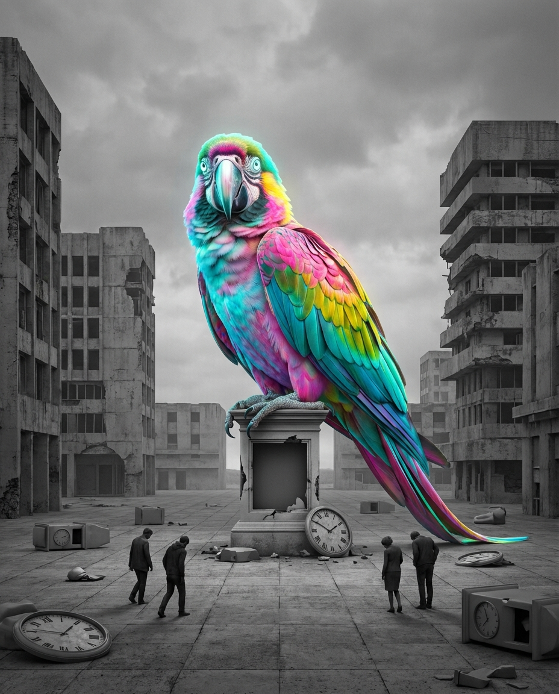

الصورة
City of Failure
1) اسم الوحش
الببغاء — وحش التقليد
2) وصفه بمدينة الفشل
ببغاء عملاق، ألوانه بهيجة، صوته جذاب، يردد كل شيء. يبدو لطيفًا… لكنه في الحقيقة “يسرق الصوت”. عندما تقول فكرة جديدة… يلتقطها فورًا… ويعيدها بصوت أجمل… فيصفق الجميع له.
3) مهمته الأساسية
قتل الإبداع عبر سرقة الفكرة وإعادة إنتاجها بشكل مسموح اجتماعيًا.
4) اسم منطقته بمدينة الفشل
المدينة الرمادية / ساحة التصفيق
5) سيرته الشخصية (نماذج مشهورة)
- مبدعون كُثر انسحبوا لأن أفكارهم “سُرقت” أو نُسبت لغيرهم.
- مشاريع عربية ماتت لأن المجتمع صدّق النسخة المستوردة أكثر.
6) ماذا يدمر من عناصر الذات الأساسية
- العقل: يفقد ثقته في ابتكاره.
- النفس: تدخل في إحباط واستسلام.
- الروح: تنطفئ عندما تُهان الفكرة.
- الجسد: يتعب لأنه يعمل ولا يُنسب له شيء.
7) ماذا يدمر من عناصر الذات الفرعية
- القلب: يبرد شغفه.
- الضمير: يبرر “أنا كده كده مش هنجح”.
- المخ: يتحول إلى نسخة مقلدة.
- الفؤاد: يختنق لأن الإشارة الأصلية تُشوَّه.
8) ماذا يدمر من المجالات البيئية
- الاتجاه: لأنك لا تعرف هل تمشي في طريقك أم تقلّد.
- الزمان: يضيع في مقارنة الآخرين.
- المادة: تُستنزف في ملاحقة “ترند”.
- الطاقة الإيجابية: تتحول إلى تصفيق فارغ.
9) أين يكون الأخطر عمليًا
- في بيئات العمل التي تقدّس “الشكل” لا “الفكرة”.
- على السوشيال ميديا.
- في مجتمعات تخاف من المختلف.
10) خطة مواجهته / الأسلحة المضادة
- توثيق الفكرة (كتابة + نشر بسيط).
- عدم انتظار الإذن الاجتماعي.
- الاستمرار في الإنتاج بدل الشكوى.
11) الدروع المناسبة ضد هجماته
- درع “الثقة بالأصل”.
- درع “التوثيق والنشر”.
- درع “عدم المقارنة”.